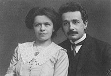

Albert Einstien
Albert Einstein (14 March 1879 – 18 April 1955) was a German-born theoretical physicist,widely ranked among the greatest and most influential scientists of all time. Best known for developing the theory of relativity, he also made important contributions to quantum mechanics, and was thus a central figure in the revolutionary reshaping of the scientific understanding of nature that modern physics accomplished in the first decades of the twentieth century.His mass–energy equivalence formula E = mc2, which arises from relativity theory, has been called "the world's most famous equation".His work is also known for its influence on the philosophy of science.He received the 1921 Nobel Prize in Physics "for his services to theoretical physics, and especially for his discovery of the law of the photoelectric effect",a pivotal step in the development of quantum theory. His intellectual achievements and originality resulted in "Einstein" becoming synonymous with "genius".Einsteinium, one of the synthetic elements in the periodic table, was named in his honor.
In 1905, a year sometimes described as his annus mirabilis (miracle year), Einstein published four groundbreaking papers.These outlined a theory of the photoelectric effect, explained Brownian motion, introduced his special theory of relativity—a theory which addressed the inability of classical mechanics to account satisfactorily for the behavior of the electromagnetic field—and demonstrated that if the special theory is correct, mass and energy are equivalent to each other. In 1916, he proposed a general theory of relativity that extended his system of mechanics to incorporate gravitation. A cosmological paper that he published the following year laid out the implications of general relativity for the modeling of the structure and evolution of the universe as a whole.The middle part of his career also saw him making important contributions to statistical mechanics and quantum theory. Especially notable was his work on the quantum physics of radiation, which introduced the idea that light consisted of particles, subsequently called photons. For much of the last phase of his academic life, Einstein worked on two endeavors that proved ultimately unsuccessful. Firstly, he fought a long rearguard action against quantum theory's introduction of fundamental randomness into science's picture of the world, objecting that "God does not play dice".Secondly, he attempted to devise a unified field theory by generalizing his geometric theory of gravitation to include electromagnetism too. As a result, he became increasingly isolated from the mainstream of modern physics.
Born in the German Empire, Einstein moved to Switzerland in 1895, forsaking his German citizenship (as a subject of the Kingdom of Württemberg)the following year. In 1897, at the age of seventeen, he enrolled in the mathematics and physics teaching diploma program at the Swiss Federal polytechnic school in Zürich, graduating in 1900. In 1901, he acquired Swiss citizenship, which he kept for the rest of his life. In 1903, he secured a permanent position at the Swiss Patent Office in Bern. In 1905, he submitted a successful PhD dissertation to the University of Zurich. In 1914, he moved to Berlin in order to join the Prussian Academy of Sciences and the Humboldt University of Berlin. In 1917, he became director of the Kaiser Wilhelm Institute for Physics; he also became a German citizen again, this time as a subject of the Kingdom of Prussia.In 1933, while he was visiting the United States, Adolf Hitler came to power in Germany. Alienated by the policies of the newly elected Nazi government,Einstein decided to remain in the US, and was granted American citizenship in 1940.On the eve of World War II, he endorsed a letter to President Franklin D. Roosevelt alerting him to the potential German nuclear weapons program and recommending that the US begin similar research. Einstein supported the Allies but generally viewed the idea of nuclear weapons with great dismay.
Life and Education
Childhood
Albert Einstein was born in Ulm,in the Kingdom of Württemberg in the German Empire, on 14 March 1879.His parents, secular Ashkenazi Jews, were Hermann Einstein, a salesman and engineer, and Pauline Koch. In 1880, the family moved to Munich, where Einstein's father and his uncle Jakob founded Elektrotechnische Fabrik J. Einstein & Cie, a company that manufactured electrical equipment based on direct current. Albert attended a Catholic elementary school in Munich from the age of five. When he was eight, he was transferred to the Luitpold-Gymnasium (now known as the Albert-Einstein-Gymnasium ), where he received advanced primary and then secondary school education. In 1894, Hermann and Jakob's company tendered for a contract to install electric lighting in Munich, but without success—they lacked the capital that would have been required to update their technology from direct current to the more efficient, alternating current alternative.The failure of their bid forced them to sell their Munich factory and search for new opportunities elsewhere. The Einstein family moved to Italy, first to Milan and a few months later to Pavia, where they settled in Palazzo Cornazzani, a medieval building which, at different times, had been the home of Ugo Foscolo, Contardo Ferrini and Ada Negri.Einstein, then fifteen, stayed behind in Munich in order to finish his schooling. His father wanted him to study electrical engineering, but he was a fractious pupil who found the Gymnasium's regimen and teaching methods far from congenial. He later wrote that the school's policy of strict rote learning was harmful to creativity. At the end of December 1894, a letter from a doctor persuaded the Luitpold's authorities to release him from its care, and he joined his family in Pavia.While in Italy as a teenager, he wrote an essay entitled "On the Investigation of the State of the Ether in a Magnetic Field".
Einstein excelled at physics and mathematics from an early age, and soon acquired the mathematical expertise normally only found in a child several years his senior. He began teaching himself algebra, calculus and Euclidean geometry when he was twelve; he made such rapid progress that he discovered an original proof of the Pythagorean theorem before his thirteenth birthday.A family tutor, Max Talmud, said that only a short time after he had given the twelve year old Einstein a geometry textbook, the boy "had worked through the whole book. He thereupon devoted himself to higher mathematics ... Soon the flight of his mathematical genius was so high I could not follow."Einstein recorded that he had "mastered integral and differential calculus" while still just fourteen.His love of algebra and geometry was so great that at twelve, he was already confident that nature could be understood as a "mathematical structure". At thirteen, when his range of enthusiasms had broadened to include music and philosophy,Einstein was introduced to Kant's Critique of Pure Reason. Kant became his favorite philosopher; according to his tutor, "At the time he was still a child, only thirteen years old, yet Kant's works, incomprehensible to ordinary mortals, seemed to be clear to him."
In 1895, at the age of sixteen, Einstein sat the entrance examination for the Federal polytechnic school (later the Eidgenössische Technische Hochschule, ETH) in Zürich, Switzerland. He failed to reach the required standard in the general part of the test,but performed with distinction in physics and mathematics.On the advice of the polytechnic's principal, he completed his secondary education at the Argovian cantonal school (a gymnasium) in Aarau, Switzerland, graduating in 1896. While lodging in Aarau with the family of Jost Winteler, he fell in love with Winteler's daughter, Marie. (His sister, Maja, later married Winteler's son Paul. In January 1896, with his father's approval, Einstein renounced his citizenship of the German Kingdom of Württemberg in order to avoid conscription into military service.The Matura (graduation for the successful completion of higher secondary schooling) awarded to him in the September of that year acknowledged him to have performed well across most of the curriculum, allotting him a top grade of 6 for history, physics, algebra, geometry, and descriptive geometry.At seventeen, he enrolled in the four-year mathematics and physics teaching diploma program at the Federal polytechnic school. Marie Winteler, a year older than him, took up a teaching post in Olsberg, Switzerland. The five other polytechnic school freshmen following the same course as Einstein included just one woman, a twenty year old Serbian, Mileva Marić. Over the next few years, the pair spent many hours discussing their shared interests and learning about topics in physics that the polytechnic school's lectures did not cover. In his letters to Marić, Einstein confessed that exploring science with her by his side was much more enjoyable than reading a textbook in solitude. Eventually the two students became not only friends but also lovers. Historians of physics are divided on the question of the extent to which Marić contributed to the insights of Einstein's annus mirabilis publications. There is at least some evidence that he was influenced by her scientific ideas,but there are scholars who doubt whether her impact on his thought was of any great significance at all.
Marriages, Relationship and children
Correspondence between Einstein and Marić, discovered and published in 1987, revealed that in early 1902, while Marić was visiting her parents in Novi Sad, she gave birth to a daughter, Lieserl. When Marić returned to Switzerland it was without the child, whose fate is uncertain. A letter of Einstein's that he wrote in September 1903 suggests that the girl was either given up for adoption or died of scarlet fever in infancy. Einstein and Marić married in January 1903. In May 1904, their son Hans Albert was born in Bern, Switzerland. Their son Eduard was born in Zürich in July 1910. In letters that Einstein wrote to Marie Winteler in the months before Eduard's arrival, he described his love for his wife as "misguided" and mourned the "missed life" that he imagined he would have enjoyed if he had married Winteler instead: "I think of you in heartfelt love every spare minute and am so unhappy as only a man can be." In 1912, Einstein entered into a relationship with Elsa Löwenthal, who was both his first cousin on his mother's side and his second cousin on his father's.When Marić learned of his infidelity soon after moving to Berlin with him in April 1914, she returned to Zürich, taking Hans Albert and Eduard with her.Einstein and Marić were granted a divorce on 14 February 1919 on the grounds of having lived apart for five years.As part of the divorce settlement, Einstein agreed that if he were to win a Nobel Prize, he would give the money that he received to Marić; she had to wait only two years before her foresight in extracting this promise from him was rewarded.
Einstein married Löwenthal in 1919.In 1923, he began a relationship with a secretary named Betty Neumann, the niece of his close friend Hans Mühsam.Löwenthal nevertheless remained loyal to him, accompanying him when he emigrated to the United States in 1933. In 1935, she was diagnosed with heart and kidney problems. She died in December 1936. A volume of Einstein's letters released by Hebrew University of Jerusalem in 2006 added further names to the catalog of women with whom he was romantically involved. They included Margarete Lebach (a blonde Austrian), Estella Katzenellenbogen (the rich owner of a florist business), Toni Mendel (a wealthy Jewish widow) and Ethel Michanowski (a Berlin socialite), with whom he spent time and from whom he accepted gifts while married to Löwenthal.After being widowed, Einstein was briefly in a relationship with Margarita Konenkova, thought by some to be a Russian spy; her husband, the Russian sculptor Sergei Konenkov, created the bronze bust of Einstein at the Institute for Advanced Study at Princeton.
Following an episode of acute mental illness at about the age of twenty, Einstein's son Eduard was diagnosed with schizophrenia.He spent the remainder of his life either in the care of his mother or in temporary confinement in an asylum. After her death, he was committed permanently to Burghölzli, the Psychiatric University Hospital in Zürich.
Assistant at the swiss patent office
Einstein graduated from the Federal polytechnic school in 1900, duly certified as competent to teach mathematics and physics.His successful acquisition of Swiss citizenship in February 1901 was not followed by the usual sequel of conscription; the Swiss authorities deemed him medically unfit for military service. He found that Swiss schools too appeared to have no use for him, failing to offer him a teaching position despite the almost two years that he spent applying for one. Eventually it was with the help of Marcel Grossmann's father that he secured a post in Bern at the Swiss Patent Office,as an assistant examiner – level III. Patent applications that landed on Einstein's desk for his evaluation included ideas for a gravel sorter and an electric typewriter.His employers were pleased enough with his work to make his position permanent in 1903, although they did not think that he should be promoted until he had "fully mastered machine technology".It is conceivable that his labors at the patent office had a bearing on his development of his special theory of relativity. He arrived at his revolutionary ideas about space, time and light through thought experiments about the transmission of signals and the synchronization of clocks, matters which also figured in some of the inventions submitted to him for assessment. In 1902, Einstein and some friends whom he had met in Bern formed a group that held regular meetings to discuss science and philosophy. Their choice of a name for their club, the Olympia Academy, was an ironic comment upon its far from Olympian status. Sometimes they were joined by Marić, who limited her participation in their proceedings to careful listening.The thinkers whose works they reflected upon included Henri Poincaré, Ernst Mach and David Hume, all of whom significantly influenced Einstein's own subsequent ideas and beliefs.